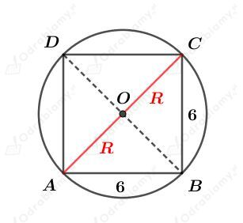
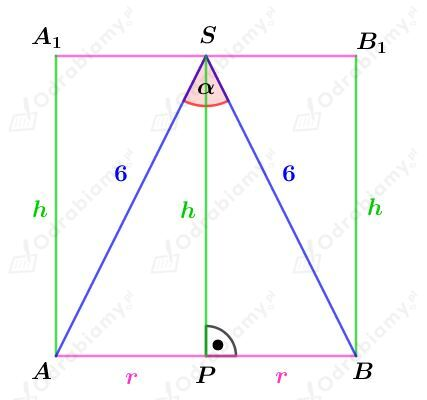
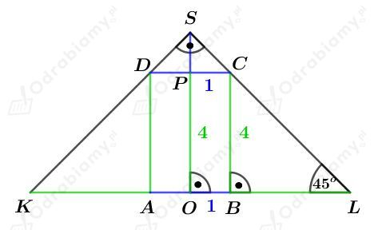
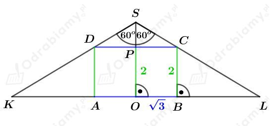

a)
Dany jest walec o promieniu podstawy R i wysokości długości H.
Podany walec jest opisany na sześcianie o krawędzi długości 6 cm.
Naszkicujmy podstawę tego sześcianu, na której opisana jest podstawa tego walca. Mamy:

Skoro walec jest opisany na sześcianie, to
Odcinek AC jest przekątną kwadratu o boku długości 6 cm, zatem:
Obliczmy objętość tego walca. Mamy:
b)
Dany jest sześcian o krawędzi długości a.
Dany jest walec I wpisany w ten sześcian. Promień podstawy tego walca ma długość 1/2a, a jego wysokość ma długość a.
Wyznaczmy objętość tego walca. Mamy:
Dany jest walec II opisany na tym sześcianie. Promień podstawy tego walca ma długość √2/2a, a jego wysokość ma długość a.
Wyznaczmy objętość tego walca. Mamy:
Wyznaczmy stosunek objętości walca opisanego na tym sześcianie do objętości walca wpisanego w ten sześcian. Mamy:
Odp. Stosunek tych objętości jest równy 2:1.
Dany jest stożek o promieniu podstawy długości r, tworzącej długości 6 cm i kącie rozwarcia 𝛼. Na tym stożku opisano walec o promieniu podstawy długości r i wysokości długości h.
Rysunek:

a)
Wiemy, że
Korzystając z twierdzenia cosinusów dla trójkąta ABS otrzymujemy:
Korzystając z twierdzenia Pitagorasa dla trójkąta PBS mamy:
Obliczmy objętość tego walca. Mamy:
b)
Wiemy, że
Korzystając z twierdzenia cosinusów dla trójkąta ABS otrzymujemy:
Korzystając z twierdzenia Pitagorasa dla trójkąta PBS mamy:
Obliczmy objętość tego walca. Mamy:
a)
Dany jest walec o promieniu podstawy długości 1 i wysokości długości 4. Został on wpisany w stożek, którego kąt rozwarcia ma miarę 90o.
Rysunek:

Trójkąt BLC jest trójkątem prostokątnym równoramiennym, zatem
Trójkąt PCS jest trójkątem prostokątnym równoramiennym, zatem
Czyli
oraz
Obliczmy objętość tego stożka. Mamy:
b)
Dany jest walec o promieniu podstawy długości √3 i wysokości długości 2. Został on wpisany w stożek, którego kąt rozwarcia ma miarę 120o.
Rysunek:

Korzystając ze związku między długościami boków w trójkącie PCS o kątach 30o, 60o, 90o mamy:
czyli
Korzystając ze związku między długościami boków w trójkącie OLS o kątach 30o, 60o, 90o mamy:
oraz
Obliczmy pole powierzchni całkowitej tego stożka. Mamy:
Dany jest ostrosłup prawidłowy sześciokątny wpisany w stożek. Podstawa ostrosłupa jest wpisana w podstawę stożka. Wierzchołki obu brył się pokrywają.
Oznaczmy przez h wspólną wysokość ostrosłupa i stożka.
Niech r będzie długością promienia podstawy stożka. Zatem r jest długością krawędzi podstawy ostrosłupa.
Wyznaczmy objętość tego stożka. Mamy:
Wyznaczmy objętość tego ostrosłupa. Mamy:
Wyznaczmy stosunek objętości stożka do objętości ostrosłupa. Mamy:
Stożek wpisano w ostrosłup prawidłowy czworokątny. Podstawa stożka jest wpisana w podstawę ostrosłupa.
Wierzchołki obu brył się pokrywają, więc przez h oznaczymy wspólną wysokość tych dwóch brył.
Niech r będzie długością promienia podstawy tego stożka. Wówczas krawędź podstawy ostrosłupa ma długość 2r.
Wyznaczmy objętość tego ostrosłupa. Mamy:
Wyznaczmy objętość tego stożka. Mamy:
Wyznaczmy stosunek objętości ostrosłupa do objętości stożka. Mamy:
co kończy dowód.